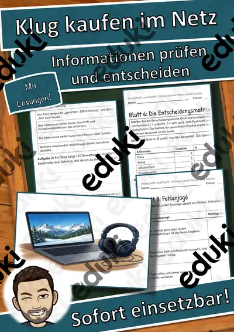

Taschengeld – mein Geld klug einteilen – Lesespurgeschichte mit Rätselaufgaben (Klasse 3)
Taschengeld – mein Geld klug einteilen – Lesespurgeschichte Wirtschaft (Klasse 3/4)Schick deine Klasse auf eine Lesespur über den Herbstmarkt! Ida und Malik aus der 3b dürfen heute zum ersten Mal ihr Taschengeld selbst ausgeben. Opa Kurt begleitet sie vom Marktbrunnen, wo es das Taschengeld gibt, zum Spielwarenstand, an dem Idas großer Wunsch leider zu teuer ist, zum Bäckerstand, an dem es um Wünsche und Bedürfnisse geht, und zum Kartenstand, wo Malik sich über einen Spontankauf ärgert. Am Schreibwarenstand vergleichen die beiden Preise, in der Bank wartet eine Rechenaufgabe zum Sparen, im Bücherbus leihen sie statt zu kaufen – und im Café schreibt Ida ihr erstes Geldtagebuch. Am Ende jedes Abschnitts verrät ein Hinweis den nächsten Ort auf dem Plan – nur wer genau liest, findet den Weg und sammelt alle geheimen Buchstaben zum Lösungswort.
Die perfekte Lesespur für HSU / Sachunterricht und Wirtschaft in der 3. und 4. Klasse – ideal für den Lernbereich „Leben in einer Medien- und Konsumgesellschaft“, für Vertretungsstunden und fächerübergreifend mit Deutsch und Mathematik: Sie verbindet sinnentnehmendes Lesen mit dem klugen Umgang mit Geld und Sachaufgaben zum Rechnen mit Euro. Das Material ist SOFORT EINSETZBAR und in DREI DIFFERENZIERUNGSSTUFEN (leicht ★ / mittel ★★ / schwer ★★★) angelegt.WICHTIG: Das komplette Material ist sowohl in FARBE als auch in SCHWARZ-WEISS enthalten – ideal zum Sparen von Druckkosten.DAS IST ENTHALTEN
- Lesespurgeschichte in 3 Niveaus (leicht, mittel, schwer)
- farbiger Plan vom Herbstmarkt als Suchkarte
- Hörverstehen mit QR-Code zur MP3 (selbstständiges Hören mit Kopfhörern)
- vier Aufträge auf dem Weg: eine Zuordnung, ein Quiz, eine Rechenaufgabe und ein Steckbrief
- Rätselseite (Wörter-Suchsel + Fragen rund ums Taschengeld)
- Ausmalbild zum Thema
- ausführliches Lösungsblatt für die Lehrkraft
- alles zusätzlich als komplette Schwarz-Weiß-VarianteSO GEHT DIE LESESPURDie Kinder lesen ab START, finden im Text den nächsten Ort, suchen ihn auf dem Plan und lesen bei dieser Station weiter. An jeder richtigen Station gibt es einen Buchstaben. Eingeplante Sackgassen (Blumenstand, Obststand, Drehorgel, Rathaus) sind keine Stationen und dienen der Selbstkontrolle. Am Ende werden die gesammelten Buchstaben umgestellt und ergeben ein geheimes Lösungswort. (Die Lösungen sind selbstverständlich nur im Lösungsblatt für die Lehrkraft enthalten.)INHALTLICHER SCHWERPUNKTUmgang mit Taschengeld: eigenes Geld und eigene Entscheidungen, Wünsche und Bedürfnisse unterscheiden, ein Sparziel setzen, Spontankäufe vermeiden, Preise vergleichen, Geld sicher aufbewahren, leihen statt kaufen und ein Geldtagebuch führen.ABGEDECKTER LEHRPLAN (Klasse 3/4)
- HSU / Sachunterricht (LehrplanPLUS Bayern) – Jahrgangsstufe 3/4: Leben in einer Medien- und Konsumgesellschaft – Wünsche und Bedürfnisse, überlegte Kaufentscheidungen, planvoller Umgang mit Geld.
- Mathematik – Jahrgangsstufe 3: Größen und Messen – Geld, Sachaufgaben lösen.
- Deutsch – Jahrgangsstufe 3/4: Texte sinnentnehmend lesen; Zuhören: einem Hörtext folgen (Hörverstehen mit MP3).Geeignet für Freiarbeit, Stationenlernen, Vertretungsstunden, Wochenplan und als Einstieg in das Thema Geld und Konsum. Klassenstufe 3/4.
Ähnliche Materialien

Die Bank – Lesespurgeschichte mit Rätselaufgaben (Klasse 8)

Bank Lückentext mit Wortspeicher Hörverstehen und Suchsel

Taschengeld Lückentext mit Wortspeicher Hörverstehen und Suchsel

Geld und Zahlungsverkehr – Prüfungstraining Wirtschaft (Klasse 9)

Klug kaufen im Netz – Arbeitsheft mit Lösungen (WR 8, Realschule Bayern)

Geld – Hörverstehen mit Lückentext (interaktiv)

Geld Lückentext mit Wortspeicher Hörverstehen und Suchsel